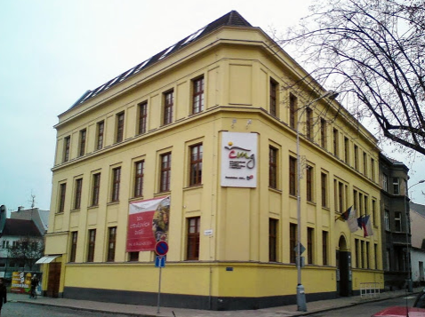

Cyrilometodějské gymnázium, základní škola a mateřská škola v Prostějově (CMG) je církevní osmileté gymnázium, 2. stupeň základní školy a mateřská škola pro děti všech rodičů, kterým záleží na kvalitním vzdělání a křesťanské výchově jejich dětí.